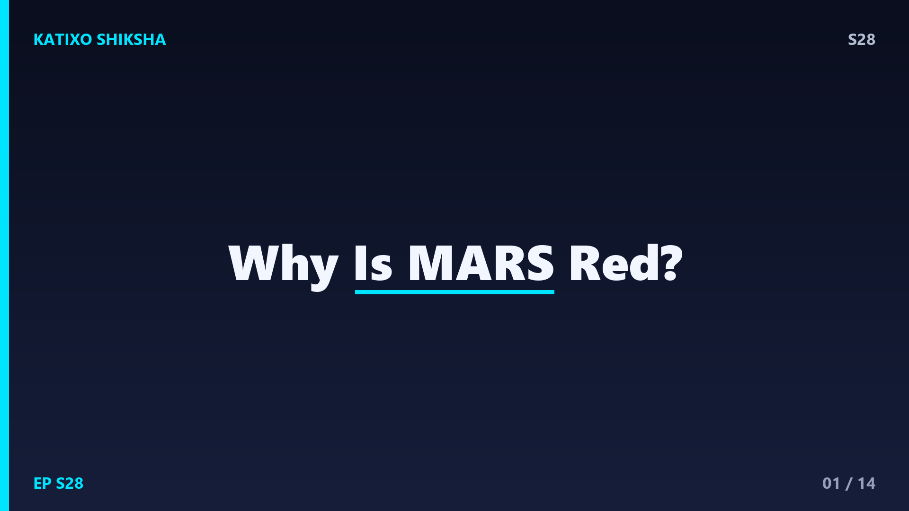
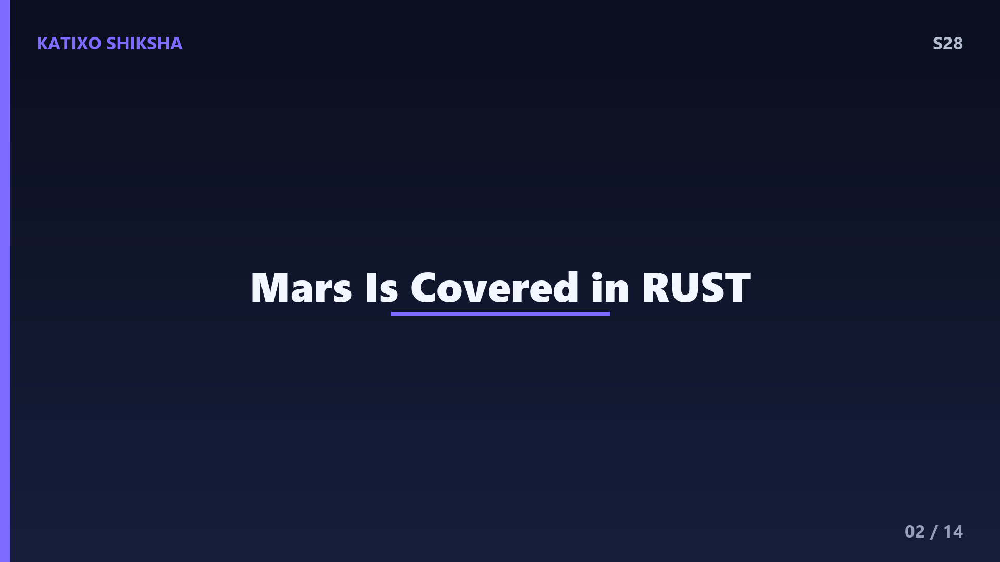
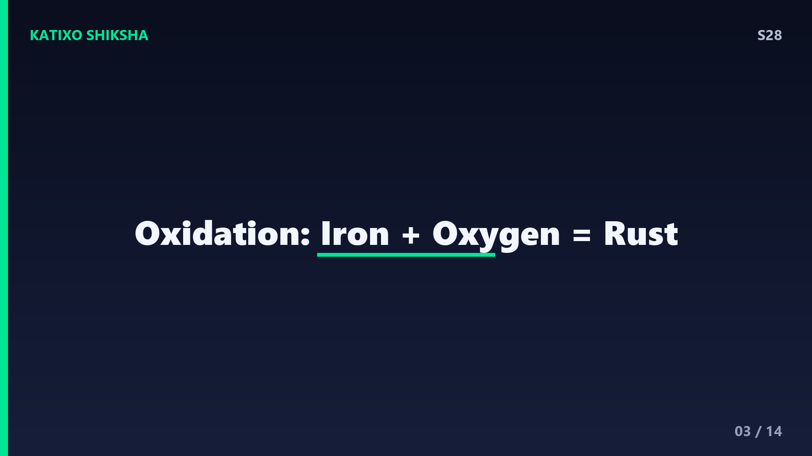
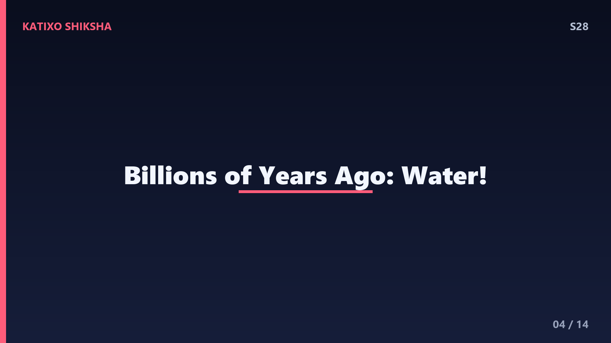
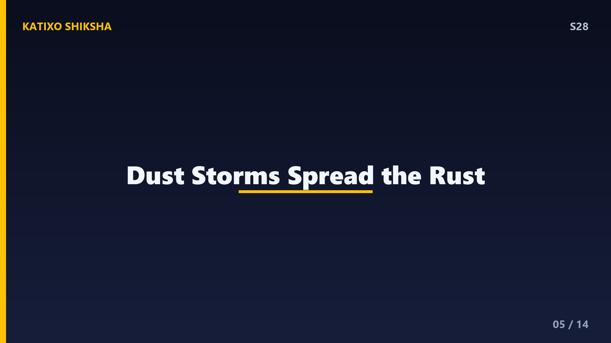
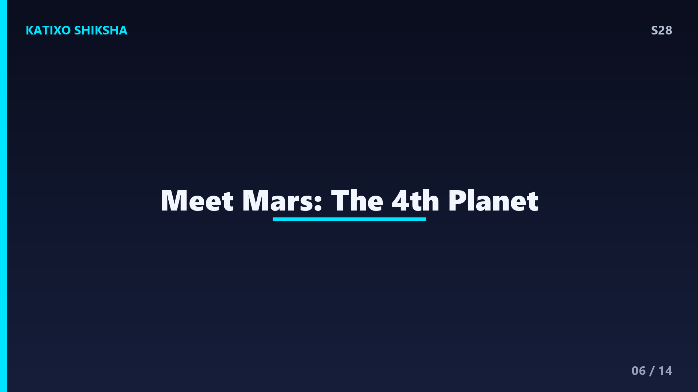
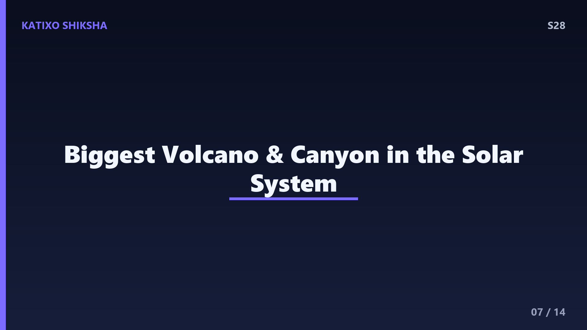
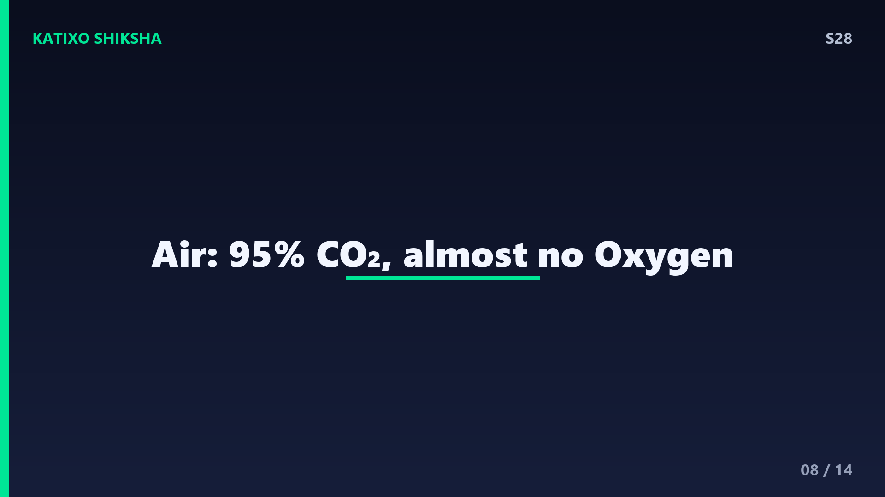
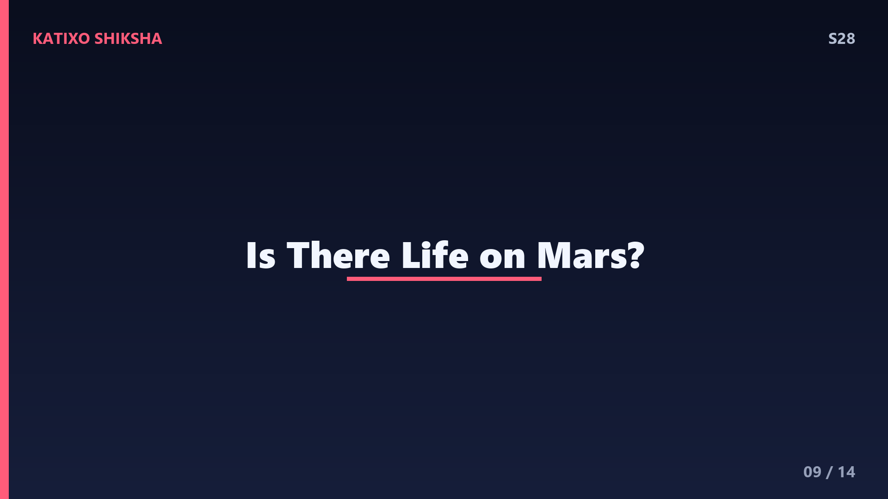
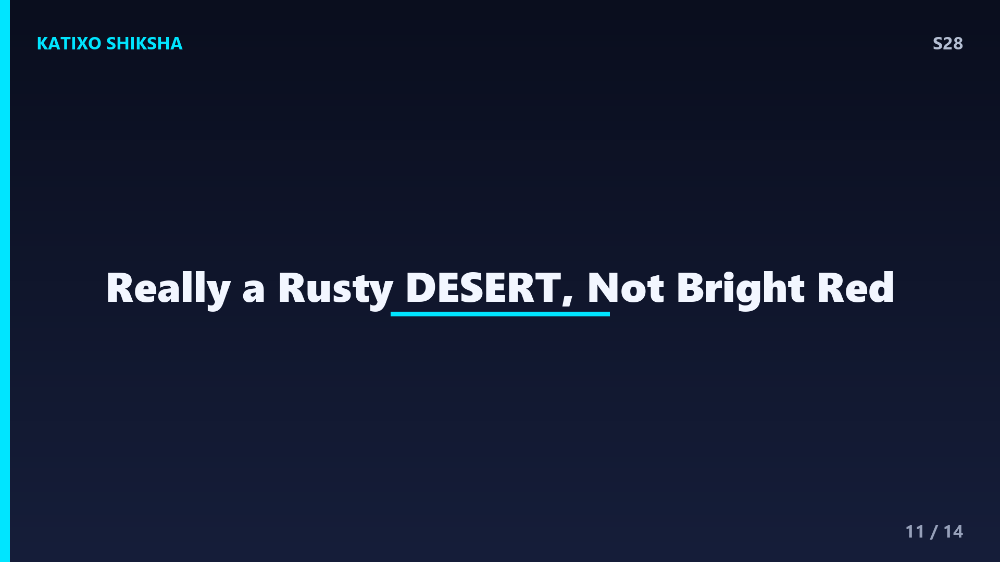

S28 — Mars यानी मंगल ग्रह लाल क्यों है?

Slide 1दोस्तों, रात के आसमान में जब तुम एक हल्के लाल-नारंगी रंग का चमकता तारा देखते हो, तो वो तारा नहीं, बल्कि हमारा पड़ोसी ग्रह Mars यानी मंगल है! इसे Red Planet यानी लाल ग्रह कहते हैं। पुराने ज़माने में लोग इसके लाल रंग की वजह से इसे युद्ध और गुस्से का ग्रह मानते थे। पर असली सवाल यह है, आखिर एक पूरा ग्रह लाल कैसे हो सकता है? क्या वहाँ आग लगी है? आज Katixo Shiksha पर हम Mars के इस लाल रहस्य को पूरी science के साथ समझेंगे। चलो दोस्तों, मंगल की सैर पर!

Slide 2सबसे पहले जवाब सीधा है, पर मज़ेदार है। Mars लाल इसलिए है क्योंकि उसकी पूरी ज़मीन पर जंग, यानी rust फैली हुई है! हाँ दोस्तों, वही जंग जो तुम्हारी पुरानी साइकिल या लोहे की कील पर लग जाती है। Science में इसे iron oxide कहते हैं। Mars की मिट्टी में लोहा यानी iron बहुत ज़्यादा है, और यह लोहा oxygen से मिलकर लाल-नारंगी रंग का iron oxide बना देता है। तो असल में पूरा Mars एक तरह से जंग लगा हुआ ग्रह है! यह सोचना ही कितना अजीब और cool है ना, एक पूरा ग्रह जो rust से ढका है।

Slide 3अब सवाल उठता है, जंग बनती कैसे है? दोस्तों, rust बनने के लिए तीन चीज़ें चाहिए, iron यानी लोहा, oxygen, और थोड़ा सा पानी। जब iron, oxygen से react करता है, तो एक chemical reaction होता है जिसे oxidation कहते हैं। इसी से iron oxide बनता है, जिसका रंग लाल-भूरा होता है। पृथ्वी पर भी यही होता है, इसीलिए गीली कील जंग पकड़ लेती है। Mars पर अरबों सालों से यह process चल रहा है, और इसी से पूरी सतह लाल हो गई। यानी एक simple chemistry का reaction, पूरे ग्रह के पैमाने पर!

Slide 4पर एक बड़ा सवाल, Mars पर तो आज पानी और oxygen बहुत कम है, फिर इतनी जंग कैसे लगी? दोस्तों, scientists मानते हैं कि अरबों साल पहले Mars बहुत अलग था! वहाँ नदियाँ, झीलें, शायद समुद्र भी थे, और वातावरण भी मोटा था। उसी पुराने गीले और oxygen वाले समय में लोहे ने जंग पकड़ी। NASA के rovers जैसे Curiosity और Perseverance ने सूखी नदियों के निशान और ऐसे खनिज ढूँढे हैं जो सिर्फ पानी की मौजूदगी में बनते हैं। यानी Mars का लाल रंग असल में उसके गीले अतीत की एक पुरानी कहानी सुना रहा है!

Slide 5अब एक और तरीका जिससे जंग फैली। Mars की हवा में बहुत बारीक dust यानी धूल है, और इस धूल में iron oxide भरा है। तेज़ हवाएँ और dust storms इस लाल धूल को पूरे ग्रह पर उड़ाकर फैला देती हैं। यह धूल इतनी fine होती है कि हवा में लंबे समय तक तैरती रहती है। इसीलिए Mars का आसमान भी दिन में हल्का गुलाबी या butterscotch रंग का दिखता है, ना कि नीला जैसा हमारी पृथ्वी पर! दोस्तों, इन dust storms की वजह से पूरा ग्रह कई बार महीनों तक धूल की लाल चादर में ढक जाता है। यह नज़ारा सच में अद्भुत है।

Slide 6अब Mars के बारे में कुछ basic facts। Mars सूरज से चौथा ग्रह है, और पृथ्वी का बाहरी पड़ोसी। यह पृथ्वी से लगभग आधा बड़ा है, इसका diameter लगभग 6779 kilometre है। वहाँ का एक दिन यानी sol हमारे दिन जैसा ही है, लगभग 24 घंटे 37 minute। पर वहाँ साल लंबा है, लगभग 687 पृथ्वी दिन, क्योंकि वो सूरज से दूर है। Mars बहुत ठंडा है, average temperature लगभग minus 60 degree Celsius! और दोस्तों, वहाँ gravity पृथ्वी की सिर्फ 38 percent है, यानी अगर तुम्हारा वज़न 50 kg है तो Mars पर सिर्फ 19 kg लगेगा!

Slide 7Mars पर कुछ record-breaking चीज़ें भी हैं! वहाँ है Olympus Mons, पूरे solar system का सबसे ऊँचा ज्वालामुखी यानी volcano, जो लगभग 22 kilometre ऊँचा है, हमारे Mount Everest से लगभग ढाई गुना! और वहाँ है Valles Marineris, एक बहुत बड़ी घाटी यानी canyon जो लगभग 4000 kilometre लंबी है। दोस्तों, यह इतनी लंबी है कि अगर इसे पृथ्वी पर रखें तो यह लगभग पूरे India को ढक ले! Mars के दो छोटे चाँद भी हैं, Phobos और Deimos, जो आलू जैसे टेढ़े-मेढ़े दिखते हैं। है ना मंगल पूरी दुनिया के records का राजा!

Slide 8अब वातावरण की बात। Mars का atmosphere बहुत पतला है, पृथ्वी से लगभग 100 गुना पतला! और यह ज़्यादातर carbon dioxide से बना है, लगभग 95 percent। Oxygen तो वहाँ ना के बराबर है, सिर्फ 0.13 percent। इसीलिए दोस्तों, अगर इंसान बिना special spacesuit के वहाँ जाए तो साँस ही नहीं ले पाएगा। पतला वातावरण होने की वजह से Mars सूरज की गर्मी को रोक नहीं पाता, इसीलिए वहाँ इतनी ठंड है। और यही पतला atmosphere उसे radiation से भी नहीं बचा पाता, जो वहाँ जीवन के लिए एक बड़ी चुनौती है।

Slide 9अब सबसे रोमांचक सवाल, क्या Mars पर जीवन है या था? दोस्तों, अभी तक हमें वहाँ कोई जीवन नहीं मिला है। पर scientists को ऐसे संकेत मिले हैं जो उम्मीद जगाते हैं। Mars के ध्रुवों यानी poles पर बर्फ है, जिसमें पानी की ice भी है। ज़मीन के नीचे भी पानी हो सकता है। और जहाँ पानी, वहाँ जीवन की संभावना! Perseverance rover अभी वहाँ मिट्टी और चट्टानों के नमूने इकट्ठा कर रहा है, जिन्हें भविष्य में पृथ्वी पर लाकर जाँचा जाएगा। हो सकता है किसी दिन हमें पता चले कि अरबों साल पहले Mars पर छोटे-छोटे जीव रहते थे!
Slide 10अब बात इंसानों के Mars पर जाने की। दोस्तों, NASA और कई private companies जैसे SpaceX का सपना है कि इंसान Mars पर कदम रखे। पर यह बहुत मुश्किल है! एक तो Mars पृथ्वी से बहुत दूर है, लगभग 22 करोड़ kilometre तक, और सफर में 7 से 9 महीने लगते हैं। फिर वहाँ की कड़ी ठंड, radiation, और साँस लेने लायक हवा का ना होना, सब बड़ी चुनौतियाँ हैं। इसके बावजूद scientists योजना बना रहे हैं कि आने वाले कुछ दशकों में इंसान Mars पर पहुँचे। शायद तुम्हारी पीढ़ी ही पहली बार लाल ग्रह पर कदम रखे!

Slide 11एक मज़ेदार fact, Mars का लाल रंग असल में हर जगह एक जैसा नहीं है! कुछ जगहें ज़्यादा गहरी लाल हैं, कुछ हल्की नारंगी, और कुछ भूरी या काली भी। यह इसलिए क्योंकि अलग-अलग जगहों पर अलग-अलग खनिज और चट्टानें हैं। दोस्तों, असल में Mars को देखो तो वो चमकदार लाल नहीं, बल्कि एक हल्के butterscotch या जंग जैसे रंग का है। पुरानी तस्वीरों में इसे ज़्यादा लाल दिखाया जाता था। NASA के rovers की असली रंगीन तस्वीरों में Mars एक धूल भरे रेगिस्तान जैसा दिखता है। तो लाल ग्रह असल में एक जंग लगा रेगिस्तान है!
Slide 12Quick brain check, दोस्तों! तीन सवाल, ध्यान से सोचो। पहला, Mars के लाल रंग का असली कारण कौन सा chemical है, जो लोहे और oxygen से बनता है? दूसरा, Mars का atmosphere ज़्यादातर किस gas से बना है, और oxygen वहाँ कितना है? तीसरा, solar system का सबसे ऊँचा ज्वालामुखी जो Mars पर है, उसका नाम क्या है? अब video को pause करो और तीनों के जवाब खुद सोचो। बिना scroll किए! तैयार हो? चलो जवाब मिलाते हैं!
Slide 13जवाब का समय! पहला, Mars का लाल रंग iron oxide यानी जंग की वजह से है, जो लोहे के oxygen से react करने पर oxidation से बनता है। दूसरा, Mars का atmosphere लगभग 95 percent carbon dioxide से बना है, और oxygen वहाँ बहुत कम, सिर्फ लगभग 0.13 percent है, इसीलिए वहाँ साँस नहीं ली जा सकती। तीसरा, solar system का सबसे ऊँचा ज्वालामुखी है Olympus Mons, जो लगभग 22 kilometre ऊँचा है। सब सही? शाबाश दोस्तों!
Slide 14तो दोस्तों, आज हमने सीखा कि Mars लाल इसलिए है क्योंकि उसकी सतह iron oxide यानी जंग से ढकी है, जो अरबों साल पहले पानी और oxygen की मौजूदगी में बनी। dust storms इस लाल धूल को पूरे ग्रह पर फैलाती हैं। Mars ठंडा है, उसका atmosphere पतला और carbon dioxide वाला है, और वहाँ solar system के सबसे बड़े volcano और canyon भी हैं। एक जंग लगा रेगिस्तान, जो हमारे भविष्य का नया घर बन सकता है! अगले episode में हम जानेंगे, शहद यानी honey कभी खराब क्यों नहीं होता? Subscribe करना मत भूलना! Bye!